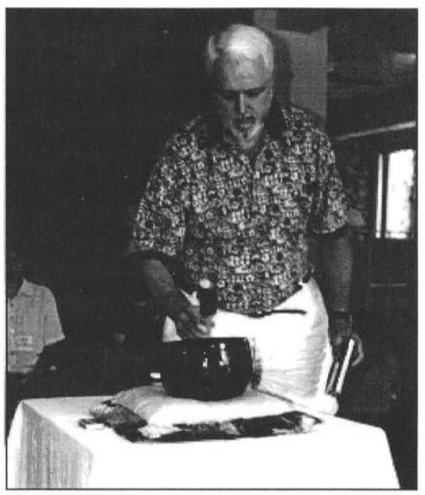
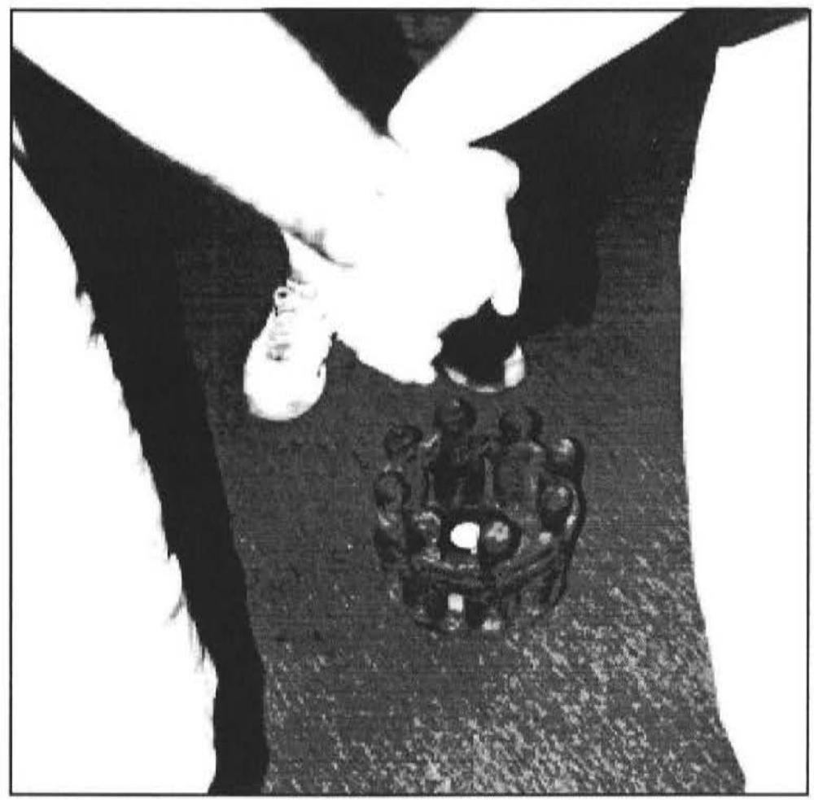

INTERVIEWED BY ROBERTA OSSANA

DNJ: Thank you for being willing to share of yourself and your time, Robert. I would like to begin the interview by introducing you to readers via your personal history. I'm deeply impressed-given the materials you've shared-with the evolution of your life: always curious, questing, growing, giving.
What were the initial stimuli? Could you share that evolution in overview... with an emphasis on how dreams have become such an integral part of your work?
BOB HADEN: I only remember two dreams before the age of 40, but over a thousand dreams since then. Forty was a pivotal year for me. Carl Jung says that "The first half of life is for success and the second is for meaning". By the age of 40 I was a success. I had won the top high school awards and was national, regional and local president of the Episcopal youth. I married a wonderful woman, Mary Anne, and we have three great sons. After graduating from college, I taught school and coached basketball. After graduating from seminary, I was a Vicar of two small parishes, on the staff of a large Cathedral, and at 35 was Rector of a large multi-staff Church. I completed an additional two years training in Pastoral Counseling and was trained in Transactional Analysis. I organized ten weekly seminars for 300 people at a Cathedral, revived Christian education for the National Episcopal Church with yearly conferences of 300 to 600 people, and was chair of program for a major conference center. In addition, I had a lot of friends and was having a lot of fun in life.
Then came the beginnings of the dark night of the soul. Like Dante, "in the middle of the journey of my life I came to myself in a dark wood where the straight way was lost". I was about to take the psychological and spiritual journey down into the hell (awareness), and the climb up Mount Purgatory (psychological and spiritual work), and off into the heavenly spheres (the mystical world). As I began this second half of my journey, I felt spiritually dead inside. The communication with the Divine was not there. The "God is dead" syndrome of the 60s was catching up with me. At the suggestion of a friend, I went to the Jesuit Center for Spiritual Growth in Wernersville, PA for four days of silence. I had never been in one day of silence. I was climbing the walls and wanted to get out of there, but then a whole other world opened up to me. My inner spiritual connection with the Divine was reopened. That was a pivotal experience that has produced a lot of deep, good fruit in my life. I understand Matthew Fox saying that it was the initial work on his book on "Prayer" that produced all since then.
Coming out of that experience, I wanted a new spiritual discipline for myself. Dreams (and meditation) filled that void. At that time I was given a two-week fellowship at a Seminary where I studied Jung, started recording my dreams and had my first visit with a Jungian Analyst. I was hooked! I said to myself "There is a whole other world that I did not even know existed". I called Morton Kelsey and asked him what I should do if I wanted to be a dreamworker to help others with their dreams. He said the first step was to work with an analyst on my own dreams. I did that for ten years. When I made the first appointment with the analyst, I asked her if I needed to prepare anything. She said, "No, the dream will tell us what to do". I said, "You are crazy, but I will come anyway. "
In my 'initial dream,' the night before my appointment,
I am going in the back (basement) door of a house on the other side of the Catawba river. In the basement is a couch, a refrigerator full of frozen food, a very young reverent priest and an old rigid priest. There is a wise woman in the background.
Initial dreams are so interesting. Many times they spell out the therapy or journey that is needed. I always ask people I am seeing if they had a dream the night before. This initial dream of mine said many things about the ten year journey I was to take with my analyst. The Catawba river was the western boundary line of the Diocese where I worked. I wanted to go outside the diocese to do my inner work. I also went in by the back door. I said I wanted to help others with their dreams. In reality I wanted to work on my own dreams and myself. The sofa, of course, represents the therapy/therapist. It was an old sofa. It had held many people and now would hold me up. Our work consisted of taking one thing at a time out of the freezer and thawing it.
"Water" in dreams is often a symbol of the unconscious and "frozen water" then, is things frozen in the unconscious. I was aware of the "young, relevant priest" side of myself, but not the "old rigid priest" inside. My analyst was really a 'wise woman' who put me in touch with my own inner wise woman. Jung says that we have to see things in projected form before we can identify it within ourselves. I really appreciate the way Carl Jung affirms things like 'projection.' In many disciplines 'projection' is just seen as bad. I began to affirm both the good and the bad in myself and to see the gold in the shadow.
This was the beginning of a new journey that led me to New York and Zurich for additional training, culminating in the establishment of the Haden Institute to train people of all vocations in the art of the dream and others in Spiritual Direction and Guidance with a heavy emphasis on dreams, Jungian psychology and the mystics of all traditions. But of course there were waking and sleeping nightmares, warning dreams, prophetic dreams, numinous dreams, and healing dreams along the way.
DNJ: In the early stages of your soul's 'dark night,' you said: "Dreams and meditation filled that void. At that time I was given a two-week fellowship at a Seminary where I studied Jung, started recording my dreams and had my first visit with a Jungian Analyst. I was hooked! I said to myself "There is a whole other world that I did not even know existed". Also, "I was hooked!"
In retrospect, and with your extensive background in religion prior to that time, why do you believe that your inner life was so dramatically unrepresented and undernourished up to that point?
BOB HADEN: Both my inner and outer life had been deeply nourished in my early years, but all of a sudden it was gone. My earlier nourishment and connection with the divine was very genuine and real, full of grace and experience, not rules and distance. I was lucky. But like all humanity, it was given to me by my Mother. By "Mother" I mean "Mother Church", "Mother Culture", "Mother Society", "Mother Family" (parents, grandparents, aunts, uncles), "Mother School", etc. It was real, but it was Mother's.
The old saying goes "God has no grandchildren". Every new generation (and person) has to finally establish its own relationship with God. I was a grandchild of God. The only way for me to become a child of God was for separation to happen. I had to first die to being a grandchild. That's what "The Chaos Theory" - in politics, sociology, science and theology, as well as death/resurrection in spirituality - is all about. It is an archetype that is ingrained in the universe. This separation is also referred to as the "Orphan Archetype".
One of my separation dreams was a powerful one. In the dream...
I am given a machine gun and told I can shoot anyone in my Parish and it would be OK. I am reminded that this is a dream and it is OK. I shoot a woman in the mouth because she talks too much. I shoot a man in the stomach because I can not "stomach him". "One person isn't even worth shooting, so I spell SOB in the sand with the gun. After the shooting, the scene shifts to a Church service. I am dancing with a female liturgical dancer. There is a 40 -male voice choir. My wife and three sons come and join the liturgical dance. My family dances down the Isle and out the front door, climbs on five camels, and travels up Interstate 85 to Kanuga (the conference center mentioned before). Then to just beyond Kanuga.

Many professionals and others in their jobs hold anger in, but especially the clergy who are supposed to be "nice" to everyone. This anger blocks much creativity and deeper relationships. That's why Julia Cameron in The Artist Way suggests "morning pages" (three written pages of whatever come out as soon as you wake up). Once these negative thoughts come out, the flood gates of the creative are opened. So, in the dream, once I shot everybody I was mad at (let my anger out), here came the dance. The scene change represents a transformation. I am led in the dance by the feminine. I am supported by the masculine which is whole and solid (40 men). Camels, for me, are associated with the desert. Once separation happens, we go into the spiritual desert. Once Jesus went and was baptized (separated from his family and knowing what his mission was) he went immediately into the desert for 40 days to deal with his demonic side. It was significant that the journey ended not at Kanuga, but just beyond Kanuga. That had a double meaning for me (as often happens in dreams). Our mountain cottage is just beyond Kanuga. It is for me what "The Tower" was for Jung. It was significant that I was not the only one going there, but my whole family. They truly have been on this journey with me. I was also going just beyond Kanuga in the sense that the kind of work I was now going to do was beyond the programming I did in the past at Kanuga.
To answer your question directly, the deeper inner life had not opened up to me because I had not separated. There is also another part of me that wants to say that it was also because I did not grow up in a culture that honored the dream and the meditative world. We were totally under the grips of the scientific and rational revolution. It is significant that all cultures and all major religions honor the dream, except for western culture and religion. The Bible is full of dreams and Christians for centuries spoke of the dream as one of the primary ways that God spoke to God's people. It makes perfect sense to me because I believe that the Divine's major language is (like the dream) metaphorical and comes from a center of healing and wholeness. After the Enlightenment, western religion not only dropped the dream but many spiritual tools: the Jesus Prayer (a repetitious prayer where you relax your whole body, becomes aware of your breath, and you repeat a Jesus mantra); the Labyrinth (an archetypical three-part prayer walk where as you walk in, you are shedding everything on your mind, in the center you are still waiting on the sense of the presence of the Holy, and walking out feeling at one with God, nature, people and the world); Centering Prayer and the Celtic tradition of experiencing God through nature. All of these take you, of course, to the other world. Luckily, all of these practices are rising again. So, in summary, it was probably both: separation (the lack of) and the east/west split.
DNJ: What do you now see as the 'bridge' or relationship among religion, prayer, dreams and meditation?
BOB HADEN: It is interesting that you use the word "bridge" because "bridge" in the dream world often refers to the bridge between the ego and the Self. The ego/Self axis is a vital one. One of the things I appreciate about dreams is that they take one quickly to the psychological and spiritual world/truths. Psychology is only 200 years old. Before that the Priest or Rabbi or Mufti was therapist as well as minister. One of the Greek words that described Jesus was theraputas. That is where we get our word therapist. Those two disciplines split and we are finding they need each other. One of my dreams spoke to this.
I am in Mrs. Jung's house. It is a three-room house. The first room has a cafeteria line where you get your food. It is full of analysts. I want to sit down there, but there is no room. So, I go to the middle room. There are only a few people there so I move on to the third room which is half full of theologians. I stay there for a good while and enjoy it. After a while I get bored and go back to the middle room. I sit down there and feel very comfortable.
This dream was painting me a picture of how, once I get my feeding (spiritual nourishment) from the psychological (relational), I can then enter the world of theology (rational thinking about God), but my real place is the "bridge" between the two. The institute I now direct offers a crossover between Jungian psychology and the mystics. It is significant that the building that now houses the Haden Institute is very similar to Mrs. Jung's house in the dream.
Religion, prayer, dreams, meditation all take us to the same world. The Aborigines speak of this world as "dreamland". They see it as the world which we came from and the world to which we return after death. That makes sense to me. Becoming familiar with dreams enabled me not only to become familiar with that world, but also to feel very comfortable in it. In the past I would discount miracles, dreams, and supernatural happenings in the Bible, but now, experiencing the dream world myself, I see them in a different, very meaningful light. Dreams (and the experience of silence) have reawakened my religion, my prayer, and my meditation.
DNJ: What you have done-and said here-takes a tremendous amount of courage; for this, I honor you.
Jung said it would be 200-300 years before the integration of dreamsharing and enactment deeply penetrates western culture.
From your own experience teaching at the Haden Institute, your community and contacts - how would you evaluate our progress in terms of 'Evolving a Dream Cherishing Culture?
BOB HADEN: Jung may be correct, but we must remember that it was Jung who said "Thank God I am not a Jungian". Jung is not God. His wisdom needs to be updated, corrected, massaged from time to time. It was his hope that we would take what we learn from him and let it play itself out in our own unique and evolutionary selves. I really appreciate him saying this. That way Jung remains a channel to Divine Wisdom, not a Guru or the idol of a clique.
I also appreciate the fact that Jung had his own problems and difficulties. I am glad that he had a father complex and that he projected it onto Freud. Without the break with Freud, he would not have gone as deeply into his separation, his 'orphan archetype,' his dark night of the soul, his deep journey into the unconscious as he did. He lived as a hermit for a significant length of time. It is out of this gestation period that most of his later works evolved. When you look at the 20 volumes of his collected works, you realize that only the first five volumes were written before this dark night. The larger number of volumes-which one can sense come from a much deeper source-were written after his dark night of the soul.
It may still take 200-300 years; however, I believe it will be sooner. There is much less resistance to dreams now and many more people are taking the dream world seriously. The world situation is causing more people to open up to the larger world and their inner resources. I believe the curve will, all of a sudden, take a sharp turn upwards. It is already increasing faster. It is important to keep focused on the fact that the journey is as important as reaching the goal. The journey includes deaths as well as resurrections. Certain deaths have to happen before certain resurrections occur.
It is only as we get dissatisfied with the old that we can embrace the new. I have an inner ease about when that will happen. Earlier in my life (in the first half of life), I would be pushing the world to be converted to dreams overnight. When we are new to the dream world we want to convert everybody else. As the numbers of people who take the dream world seriously increases, our world will be more in tune with the Self. That is exciting. I rejoice in it! But we must remember that dreams are only one way to be in touch with the Self within, albeit a royal way. Freud said "Dreams are a royal road to the unconscious". I would affirm that and also say that, for me, it has been a royal road to once again experience the Divine within.
DNJ: Given our dreams tell the truth about ourselves and our world-and how critical it is that we face the truth individually and collectively-what would be your recommendation for accelerating Jung's long term projection?
BOB HADEN: Truth is important. And accelerating Jung's long term projection is in my blood. But, for me, the more important thing is that we develop a relationship with the Divine within. John Newton, the author of Amazing Grace understood this. The line in the hymn about "a wretch like me" is not lightly said because John was the captain of a slave ship. He was later ordained an Anglican Priest and wrote the famous hymn Amazing Grace. Someone asked him how that personal transformation happened. He said it was a dream.
I am on a ship in the Mediterranean sea when a man appears to me and says that if I wear this ring I will always be doing the most important thing. I say thank you and put the ring on. A second man appears and asks about the ring and I tell him. He says that is superstition, there is nothing to it. I agree and throw the ring in the sea. As the ring is going down, I have the sinking sensation that I am always throwing the good things in life away. About that time, a third man appears, not unlike the first man. When he hears my troubles he dives into the sea, recovers the ring and brings it back on shipboard. I say thank you and ask for the ring. The man says "No, I will keep it in safekeeping and whenever you need it, call on me".
For me that was God saying "When I want to do the most important thing in life, call on me and two things will happen. You will be doing the most important thing, but, more importantly, you will develop a relationship with me."
Having said that, I would like to now speak to accelerating Jung's long term projection, which I feel is vital for this world in which we live. The seeds have already been planted with a significant number of individuals. Now it is time to influence institutions. Institutions already exist. They have massive influence. That is one of the major purposes of the Haden Institute. We train clergy, doctors, nurses, hospice workers, business executives, counselors, alcoholics anonymous workers, retreat leaders, consultants, coaches, government workers, prison workers, teachers, poets, writers and others. The next step beyond what we here and others are doing is for the art of the dream to be taught in schools of higher learning like seminaries, medical schools, MBA schools, etc. Let me speak to all of this.
The youth Minister comes in the door and says a 17 year old girl was having nightmares, screaming and yelling and frightening the other youth on their beach trip and he did not know what to do. I asked him to bring her in and let's all three talk about it. I asked the 17 year old girl to tell me the nightmare. She said,
I am holding a very large bolder on my shoulders. There is a person right below me. The boulder is getting heavier and I can no longer hold it. It is going to fall on the person below me.

After empathizing with her nightmare, I asked, "Who is the person on the ground below you?" "It looks a little bit like my sister and a little bit like me."'"Tell me about your sister.'"'She has been retarded since birth. I am her primary caretaker, because my parents do not care for her very much. And I am going to college next year." I said "I want you to go home and tell your parents to become the primary caretakers now. If you don't, the boulder will not only fall on your sister but you also."The 17-year-old followed through with the message of the dream. The Youth Minister no longer questioned the spiritual wisdom of the dream. Without the help of the dream, it would have taken many sessions to get at this material in a health-producing way.
Now the sad fact is that when people bring dreams, visions, nightmares to their ministers, they frequently dismiss them because they are unfamiliar with the dreamworld and don't know what to do or say, much less sense that there is usually gold in this metaphorical message from the Divine. The art of the dream needs to be taught in Theological Seminaries.
Three years into the establishment of the our Institute, I had a warning dream.
There are six of us and two small planes ready to take off. The suggestion is to go three and three. But, my son, Robert, who is an extroverted intuitive type is the pilot of one of the planes. We all want to go with him, so, all six of us crowd into one small plane. Robert decides to take off from the beach rather than the solid runway. There are boats out in the water and a voice says, "Somebody tried that last week and crashed."
When, upon awaking, I heard the word "CRASHED", I knew I'd better pay attention. I am now convinced that if I had not paid attention to this dream, I would be broke, the Haden Institution would have gone down the drain and my health would be diminished. Pondering this dream, it suddenly hit me that I was trying to launch six major projects at the Institute all at once. The dream was telling me that if I continued with that, I would crash. I already had one work-related car accident (the unconscious was now speaking in my waking life because I was not hearing it through my dreams) and been to the hospital because of all of the tension. Extroverted intuitive types, like me, tend to have great ideas coming out of the unconscious (water) and they want to launch them all right away.
The dream not only diagnosed the problem, but offered a solution: Divide the six projects into threes and take off on solid ground. Because of that warning dream, I put three projects on the back burner until the other three were solidly launched. I also called in a CPA to look at my business from a financial point of view and give me advise. She said "Are you enjoying the 15 in-town seminars you sponsor? You are losing money on them and expend a lot of energy, but if you enjoy them... "I got the message, dropped all in-town seminars and many other projects and concentrated on three things: The Dream/Spiritual National Training, The Labyrinth Events and Counseling. I became a much more focused person, the programs blossomed, and the financial situation improved.
This incident also brought to mind all the times churches I had worked for wanted to bring in CPAs and I resisted because I knew that would put a damper on all the plans I had for the church. But when the dream encourages me to do something against my extroverted intuitive nature, I listen and, more times than not, take action. This dream of mine needs to be told in every MBA school, not because it is mine, but because it will help business people catch a glimpse of the wisdom that is there every night for them and their businesses. Additionally, how they can use the dream-focusing technique to help resolve any given business problem.
Any government official who saw the Osama bin Laden tape where he said his fear was that their secret plans to crash planes into the world trade center would get out through dreams, should take note how familiar much of the non-western world is with the dream world. It behooves our government-if for protective purposes only-to have persons who are experts in the dream world and to train the rank and file.
All physicians need to hear Jeremy Taylor's story of the lady who dreamed she had raw meat in her pocket book. Her dream group said "If that were my dream I would get my uterus checked". She, unlike most people at that juncture, went to the Doctor. She reported back that all the tests were negative, but the group said "If it were my dream I would get my uterus checked further". With deeper testing the Doctors discovered that she did have the very beginnings of cancer and that they could treat it much better with this early diagnosis.
Dreams tend to diagnose things earlier than most of our instruments, but the medical level of dreams takes a lot of discernment. One of the six projects I put on the back burner was to go down the street to the medical clinic (which honors alternative medicine) and ask if I could be a part of the diagnostic team charting the dreams of clients before, during, and after medical treatment. The Art of dreamwork needs to be taught in Medical schools, just like they are finally teaching sexuality, alternative medicines, and the benefits of meditation.
I teach Hospice Workers from the two Carolinas about dreams before, during, and after death. I teach Parish Nurses from across the southeast how to talk with patients about their dreams. One of our graduates leads an established dream group in a cancer clinic. Nurse and Hospice training needs to include the Art of dreamwork.
There is a school on the west coast that trains hospital Chaplains. A large percentage of their curriculum is work with dreams because hospital Chaplains deal with people of many denominations and religions, and the dream can cross the lines of liberal/conservative theology, diverse cultures and belief systems.
Another of our graduates, a university professor, reports that many more students corner him after class to talk since he mentioned he was being trained in dreamwork.
Vocational and guidance counselors need to be trained as well. A therapist friend of mine was going to do some additional education at a very prestigious northern university. She had a dream of the gothic arch entryway to the university. She noticed at the entryway a little flower that was withering. She knew enough about dreams that if she went to that university she would wither. She decided to go to a less prestigious college and study what she really wanted to learn. She blossomed. Dreams can be a real boon to vocational and guidance counselors and should be a part of their training.
Well, enough said. You get the point. Now is the time to influence the well-established institutions. Not only will it be of great aid to the violent and dangerous world in which we live, but it will also be health-producing to the institutions. When I teach the Labyrinth and dream education to churches, it not only opens the doors for more people to come in, but some of its members find another tool to go deeper to find the God within. One of our Dream graduates-whose daytime job is playing the trumpet in the Symphony-was asked to teach a class on spirituality at his church. Someone in the class said "I don't ever hear God speaking to me or answering my prayers. Does God speak to you?" He answered "Yes. God often speaks to me in my dreams". A significant number of individuals are now exposed to the importance of their dreams.
There are many organizations and institutes training professionals on how to use the dream in their vocation. It is now time for Seminaries, Medical Schools, MBA Schools, and other professional training institutions to have as a regular part of their curriculum "The Art, Wisdom, and Healing Properties of The Dream".
When that begins to happen in the near future, Jung's 200-300 year projection will be accelerated considerably.
DNJ: As my own Jungian mentor once said to me: "We are mapping out the plan of a lifetime". Let's do it! As an (invisible) choir of Angels once sang to me: "And great is your reward in Heaven". Thank you!